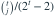

独立同分布，
独立同分布，![P_\lambda(X_i=k)=\lambda^k/[k!(e^\lambda-1)]](../practice/math/91d546e6f2984d8977f6.svg) ，
， 。令 。给定T=4， 是？
。令 。给定T=4， 是？- A
- B

- C

- D
我已思考，展开答案与解析
正确答案：A
- 给定总和t，可能分配为 ，其中 。
- 条件概率与 成正比，因此为

。 - T=4时为 。
易错提醒零截断排除了j=0和j=t，不能直接使用普通二项分布。
考后回忆 · 条件重建 · 回忆5；明确重建为两个零截断泊松观测
依据考试回忆重建；数字、选项和必要条件为补充设定，非原题。
独立同分布，，。令 。给定T=4， 是？
。考后回忆 · 条件重建 · 回忆5；明确重建为两个零截断泊松观测
依据考试回忆重建；数字、选项和必要条件为补充设定，非原题。